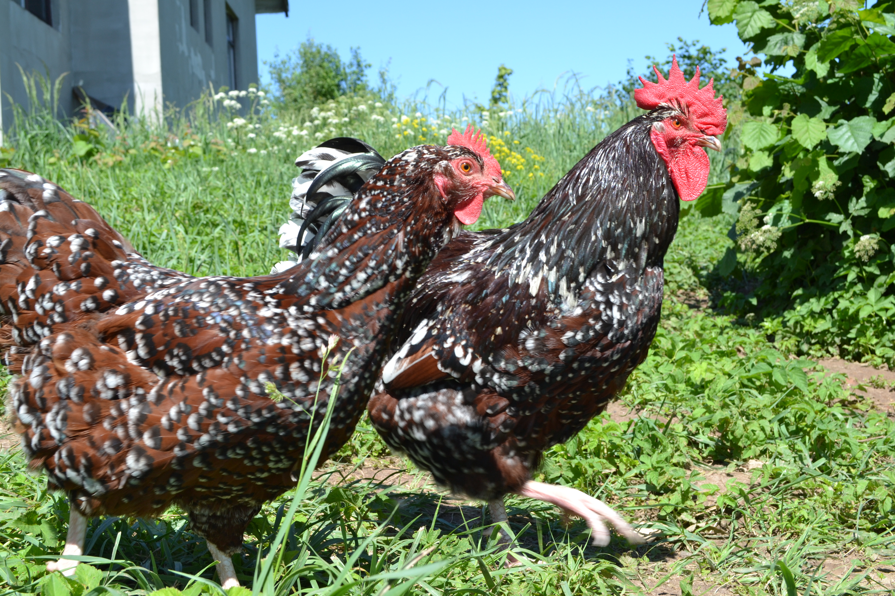

Ieteicamais uzturs: Pamatā kombinētā barība ar pēc iespējas augstāku kopproteīna saturu (lietoju cāļu barību arī pieaugušiem putniem), diedzēti vai mērcēti graudi (kvieši, auzas, griķi u.c.), dārzeņi, augļi, zaļumi un ļoti vēlama brīvā turēšana, lai putni paši var salasīt visu papildus nepieciešamo.
Vienmēr jābūt pieejamam tīram un svaigam ūdenim.
Ieteicamā turēšanas platība: 0.28m2 uz vienu putnu iekštelpās un 1m2 uz vienu putnu ārtelpu nožogojumos.
Iestājoties vakaram un naktij, putniem obligāti jābūt pieejamai slēgtai telpai/mājai, kurā nevar iekļūt vismazākie plēsēji (zebiekstes, seski utml.).
Pakaišiem lietoju "deep litter method" - 30 cm biezumā tiek ieklātas ēveļskaidas un tiek mainītas reizi dažos mēnešos pie nosacījuma, ka skaidām netiek klāt lieks mitrums un tās ir sausas.
Putnu mājai/telpai jābūt aprīkotai ar pietiekamu ventilācijas virsmas platību (min 0.1m2 uz vienu putnu), kura ir nosegta ar nesagraužamu sietu. Svarīgāk ir turēt putnus sausumā un svaigā gaisā, nekā siltumā un ar augstu relatīvo gaisa mitrumu (liekais mitrums veicina dažādas saslimšanas).
Mūsu putnu mājā ziemas aukstajos mēnešos gaisa temperatūra pazeminās gandrīz līdz āra gaisa temperatūrai - putni jūtas labi. Vēl ir jāatceras, ka putnu mājā nedrīkst būt caurvēji.